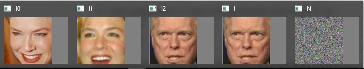
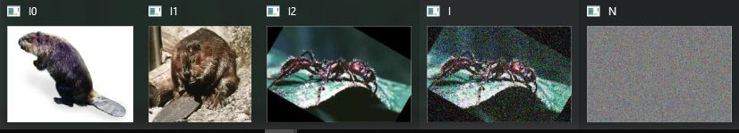

trying to fool facenet with noise ;)
sad as it is, we cannot backpropagate through opencv's dnn layers,but already a simple hillclimber is enough to demonstrate adversarial noise.
(the "distorted" image is "I", on the right"):

we extract features from the face images in the usual way, the outcome is a 128x1 float vec:
then we can start our attack, add a minimal incremental amount of noise at a time
see how it goes. if it didn't get better, we just discard it
after ~25000 tries, the feature distance between the 2 different persons is indeed smaller
than the distance between the 2 images of the same person on the left.
WIN!
it takes more noise, but we can make it predict "beaver", while it sees an ant, even:
